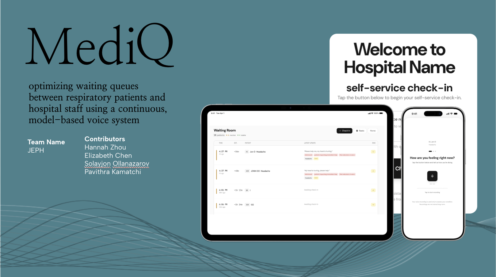

AI Engineer • Real-Time Systems • Multimodal Processing
Hi there! I'm a CS junior at Cornell who loves building real-time ML and signal-level systems that work on messy, real-world data.
I'm drawn to problems where perception, systems thinking, and multimodal signals meet, whether that's Parkinson's audio, drone navigation, or hybrid-body interfaces. I've also built infrastructure for applied AI teams and large-scale scientific workflows.
This summer, I'll be at Dolby as an AI Engineering intern working on real-time audio and ML.
↓ Scroll Down
Experience
Software Engineering Intern
May 2024 – Aug 2024
Applied AI Research Team • Articul8 AI
Engineered a multimodal document ingestion pipeline to improve extraction fidelity from unstructured scientific PDFs. Built modular upstream data layers integrated with cloud storage to support downstream LLM analytics.
UCARE Lab • University of Chicago Data Science Institute
Developed ensemble machine learning architectures to forecast large-scale job execution schedules across bioinformatic workflows. Optimized high-throughput resource routing between cloud and on-premise high-performance compute environments.
Tech Stack: Python, XGBoost, Random Forest, HPC Systems
AI Engineering Research Assistant
Feb 2026 – Present
Hybrid Body Lab • Cornell University
Designing and deploying responsive ML and digital signal processing pipelines, translating hardware sensing research into interactive prototypes driven by raw audio, motion, and physiological data streams.
Domains: Real-Time ML, Multimodal Perception, Signal Processing
Early-stage Parkinson's is traditionally expensive and difficult to diagnose. This project explores using low-cost speech recordings via the MDVR_KCL dataset, which faced two primary data constraints: noise from informal pre-scripted conversations and a small overall sample size.
The Pipeline
Data Cleansing: Integrated the Vosk speech-to-text model to automatically pinpoint the start of scripted passages and strip out preceding audio noise.
Data Augmentation: Partitioned 2–3 minute audio tracks into 20-second segments, successfully scaling the dataset to 145 high-signal samples.
Feature Extraction: Applied pre-emphasis filtering and extracted core acoustic biomarkers (Jitter, Shimmer, F0, MFCCs, and HNR) utilizing Parselmouth and Librosa.
The Results
Evaluated four architectures (SVM, Logistic Regression, Random Forests, XGBoost) optimized via GridSearchCV.
Data Segmentation Impact: Segmenting the audio dramatically optimized performance, boosting classification accuracy from a baseline of 33%–66% to a peak range of 91%–93%.
Top Model: XGBoost and Random Forests achieved the highest final accuracy at 93.1%.
FinSight AI-Powered Personal Finance Assistant
AI finance assistant that turns messy transaction data into real-time insights through automated classification, natural-language querying, and parallel analytics.
Standard personal finance tools provide raw transaction data, but it is typically messy, inconsistent, and requires heavy manual sorting to be useful. The goal was to build a secure system that ingests this unstructured data and converts it into real-time, interpretable financial intelligence.
The Architecture
Data Processing & Classification: Engineered a FastAPI backend that validates incoming data and uses an LLM-based agent to automatically clean and classify messy transactions.
Natural-Language Querying: Developed a conversational AI agent allowing users to query data using natural language, dynamically converting prompts into secure, optimized SQL.
Concurrent Analytics Engine: Architected a separate analytics processing module that executes seven financial tools simultaneously (including anomaly detection, spending trends, and budget tracking).
The Stack: Built utilizing a PostgreSQL database on Supabase, a fast FastAPI routing engine, and a modular React and TypeScript frontend featuring interactive dashboards and protected authentication routing.
The Results
Latency Optimization: Implementing parallel execution for the analytics engine cut dashboard loading latency by ~70%.
Real-Time Speed: The system generates a complete, comprehensive financial health report from raw data in just a few seconds.
Extensibility: Designed a secure, decoupled full-stack architecture optimized for handling concurrent traffic and seamless data integration.

▶
MediQ: Real-Time Clinical Triage & Queuing System
A smart ER queuing platform that transforms static waiting room triage into a continuous monitoring system using periodic voice check-ins to detect patient deterioration and automatically reprioritize queues in real time.
Domain: Digital Signal Processing (DSP), Voice Biomarkers, Real-Time Audio, Live Queuing Algorithms
The Challenge
Imagine you are an ER doctor. You peek into the waiting room and see dozens of patients with varying severity, all in pain, and you have to decide who to see first. Waiting rooms are unpredictable; a patient's condition can rapidly worsen while they wait, but traditional triage systems only capture their risk at a single point in time. Managing this uncertainty is incredibly stressful, and delayed care for a deteriorating high-risk patient drastically increases the chance of critical complications.
The Solution & Architecture
To transform the static ER waiting room into a continuous triage system, we built an AI-assisted monitoring pipeline utilizing a decoupled full-stack architecture:
The Full-Stack Flow: Developed a patient kiosk and a real-time staff dashboard using Next.js and React, backed by a NestJS server and a PostgreSQL database managed via Prisma.
Real-Time Data Streams: Integrated Socket.IO to enable low-latency, bi-directional communication, instantly pushing browser-based alerts and dynamic queue updates to staff the moment a patient's risk state changes.
Vocal Biomarker & AI Analysis: Engineered a dedicated Python voice analysis microservice utilizing a WavLM-style feature analysis model alongside an OpenAI-compatible transcription flow to analyze both what the patient says and how they sound.
Automated Outreach: Configured an asynchronous SMS integration loop to handle automated patient check-in reminders and session tracking throughout their waiting timeline.
The Results
Hackathon Recognition: Developed and pitched the end-to-end working prototype during the Cornell Health Hackathon, directly addressing the "Rethinking the Emergency Dept Waiting Room" and "Bridge2AI Voice" challenge tracks.
Dynamic Safety Risk Engine: Successfully mapped real-time audio biomarker updates to clear, active alert states (Green, Yellow, Red), eliminating the static waiting room bottleneck.
Developing an incremental autonomous navigation pipeline for a master drone navigating an unknown 300 × 80 ft arena filled with AprilTag-designated mines. The system dynamically processes live telemetry streams, inflates obstacle boundaries to enforce a safe 3-foot flight corridor, and computes collision-free trajectories in real time.
Autonomous drone navigation in dynamic environments typically suffers from high latency and collision risks when relying on static pathfinding algorithms that must recalculate maps from scratch upon encountering new obstacles. The goal was to build a highly responsive, real-time navigation architecture for a master drone competing in IARC Mission 10, enabling it to autonomously cross a 300 × 80 ft arena while dynamically avoiding a dense field of hidden mines.
The Architecture
Spatial Costmapping & Ingestion: Engineered a live telemetry pipeline that processes a stream of incoming AprilTag GPS coordinates, mapping them onto a low-footprint, 0.5m resolution global occupancy grid array built with NumPy.
Geometric Obstacle Inflation: Developed custom constraint logic that automatically calculates true Euclidean circle safety buffers around detected mines, strictly enforcing a 3-foot flight corridor to guarantee safe passage.
Incremental Path Repair Engine: Implemented a custom graph-search subsystem utilizing the D* Lite algorithm. By continuously tracking inconsistent cell states and dynamically updating vertex keys on the fly, the script repairs the global trajectory instantly without pausing flight execution.
The Stack: Programmed in Python using optimized data structures from the heapq and math libraries for efficient priority queue manipulation, coupled with NumPy for localized costmap matrix logic.
The Results
Computational Efficiency: Utilizing the incremental repair architecture of D* Lite eliminated the need for global map resets, significantly reducing path recomputation times when encountering unexpected obstacles.
Deterministic Safety: The geometric inflation layer successfully isolated hazardous coordinates, producing smooth, repeatable, and collision-free global trajectories in simulated flight tests.